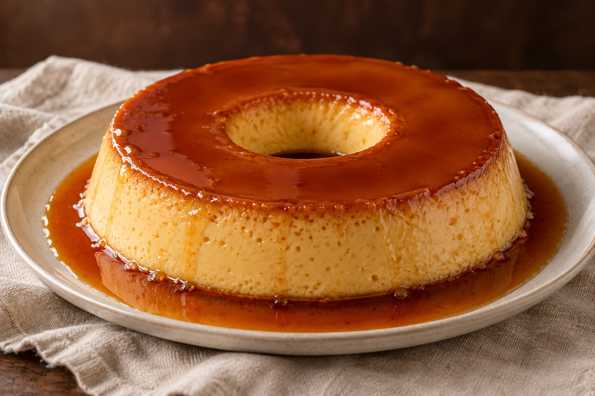

Escolha seu pudim
Explore o cardápio e encontre seu favorito.
PEQUENOS PRAZERES. GRANDES MOMENTOS.
Cremosidade, calda e carinho. Uma doce pausa para saborear o que realmente importa.

UM CONVITE PARA SABOREAR
Na Patu Pudins, cada pudim é preparado com cuidado para entregar aquela combinação perfeita de cremosidade, sabor e uma calda irresistível.
Conheça a Patu ↗Texto de apresentação demonstrativo, a ser validado pela marca.UM CLÁSSICO QUE ABRAÇA
Uma calda dourada. Uma textura delicada. Um convite para deixar o dia um pouco mais doce.
[Produto em destaque] R$ XX,XX
Campanha e produto demonstrativos.O CARINHO ESTÁ NOS DETALHES
Proposta de comunicação para validação pela marca.
PARA CELEBRAR, PRESENTEAR OU SÓ APROVEITAR
MOMENTOS QUE MERECEM SER LEMBRADOS
Encomende seus pudins para comemorações, eventos e momentos especiais.
PARA COMER COM OS OLHOS
Um olhar de perto sobre o doce.
Fotografias demonstrativas do protótipo.
ESPAÇO PARA HISTÓRIAS DOCES
Espaços reservados para avaliações reais. As estrelas são apenas demonstrativas.
DO SEU DESEJO À SUA MESA
Explore o cardápio e encontre seu favorito.
Consulte disponibilidade e confirme os detalhes.
Consulte as opções de entrega ou retirada.
Consulte regiões e disponibilidade.
[Regiões atendidas]Consulte o local e horário de retirada.
[Endereço de retirada] · [Horários]ANTES DO PRIMEIRO PEDAÇO
PRAZER, PATU
[Conte aqui a história da Patu Pudins]
Este espaço é reservado para a origem da marca, as pessoas por trás de cada receita e o cuidado em cada etapa do preparo.
O MELHOR MOMENTO PODE SER AGORA
Escolha seu favorito e faça seu pedido.